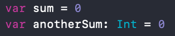
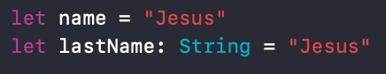

One of the things I love about Swift is that a ; is not needed at the end of each line. If you are familiar with other languagues you know that many of them require a ; at the end of each line.
Variables
 var is used when you want to declare a variable that will be changed in the future. For example var sum = 0 and later we can say sum += 4. This is perfectly valid and sum will now equal to 4.
 let is used to declare a variable that will NOT change in the future. For example, if we say let sum = 0 and we later want to change it, it will not let us and throw us an error.
Type inference is used by Swift to infer the variable type. For example, you do not need to tell the variable name that it is a string because it can infer from the right side "Jesus" that it is a string.